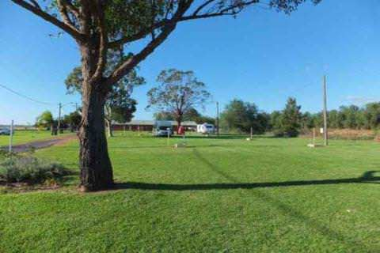
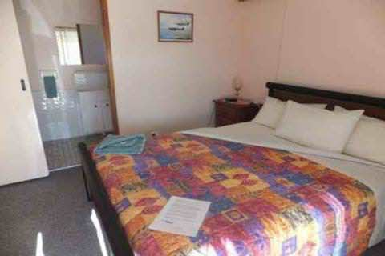
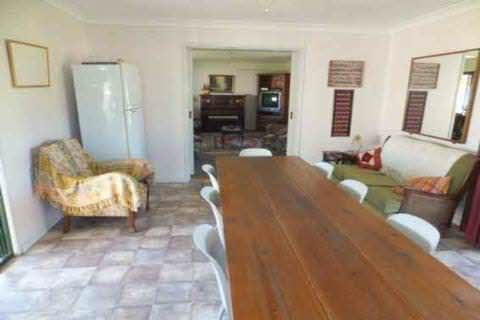

PHONE
PHONE- 
-

- 
- 
COORDINATES: 32º13'24.59"S, 148º13'47.75"E
LOCATION: Narromine Aerodrome on the Mitchell Highway, Narromine. Take the road to Nyngan and look for the aerodrome entrance on the edge of town.
COORDINATES: 32º13'24.59"S, 148º13'47.75"E
LOCATION: Narromine Aerodrome on the Mitchell Highway, Narromine. Take the road to Nyngan and look for the aerodrome entrance on the edge of town.